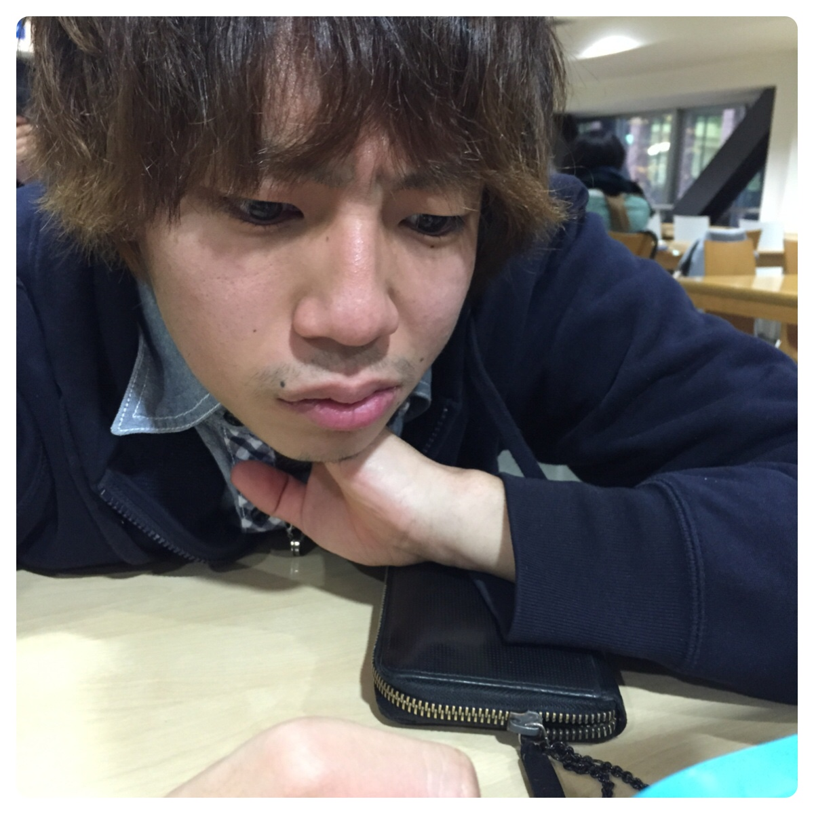

自然との調和を
目指している男です
大塚は最新技術と自然との調和を目指します。革新的な技術で世の中を動かす男を目指します
全世界の美人女性に朗報！！！
あの大塚が
とうとう婚活を始めます
大塚は最新技術と自然との調和を目指します。革新的な技術で世の中を動かす男を目指します
大塚はあらゆるSNSを使い莫大な広告、宣伝効果による婚活の終焉を目指します
世界平和は全世界の夢でありそれを自分たちの生まれたこの時代に実現させてみせます

たくさんの応募が予想されます。応募多数の場合は抽選となりますこと何卒ご了承ください
1994年に誕生
その誕生が世界を変えることになるとはまだ誰も知らないのであった
1歳になると大塚はおままごとの毎日に励み、その時代からクリエイティブな発想を培っていた
そして瞬く間にクリエイティブな発想により当時まだ3yers oldながら世界にイノベーションを起こしていった
そんな大塚の幼少期はポコペンなしでは語りきれない
4歳の時のポコペンとの出会いに感銘を受けこのままでダメだと思いモンゴルに留学する
その留学の経験が今の大塚の基盤になったと言える
そして幼稚園を首席で卒業するのであった
ドラマ、リッチマン、プアウーマンの影響を受けプログラミングを学びたいと思っていたが極度の人見知りとコミュニケーション能力のなさから学び方がわからなかったため19歳まで毎日ポコペンの毎日に励んでいた
しかし転機が舞い降りた
天才プログラマーとの出会だ
それはTech&Logicsの創設者であり株式会社FarConnectionの代表取締役社長を務め、大塚の憧れの会社であるサイバーエージェントに夏のインターンフロントエンド編において最年少で受かったいっちである
彼との出会いによりプログラミングに励む毎日を送る
また、他にも影響を受けている人物にマークザッカーバーグ、スティーブジョブズ、ウォズニアック、ラリーページ、ジョナサンアイブ、ビルゲイツ、ドーシー、名村卓氏、藤田晋氏、堀江貴文氏、熊谷正寿氏、日向徹などが挙げられる
2015年株式会社FarConnectionの手伝いをさせていただきながら夏にサイバーエージェントエージェント(以下CAと省略)の短期インターンに行き、エンジニアとしての能力を確かなものにするがCAは美女が多いことで有名な会社なためCAのキラキラ女子たちからチヤホヤされ技術を失っていく
何かを変えなくてはと思いCAからの内定を蹴ってスタートアップで会社を始めるが倒産
給料がない大塚は素敵な女性と出会い2016年結婚。
３人の子供に恵まれた
家族のために働かなくてはと*1 フリーランスとして彷徨ってると最初のFarConnectionに拾われ*2 グロースハッカーとして才能を発揮。またたくまに会社はグロースする。その成果が認められグロースハッカー最高責任者に抜擢され会社の株を51%取得し現CEO市來をCOOにし、みずからCEOを務め23歳にしてCAの藤田社長を1歳若く記録更新したリブセンス村上社長を抜き史上最年少上場社長になる
会社の成長の勢いが止まらず2017年には日本でTOYOTAしかいない株式時価総額10兆円の壁を越え2019年には日本のトップ企業になる
2020年に東京オリンピックのときにアプリをリリースし大ヒット
2022年にgoogle、2024年に*3 Appleを抜き世界のトップ企業になる。
2025年成功しすぎ周りから多大なる嫉妬を受け東京都在住の会社員に射殺され
31歳の若い人生に終止符を打つ
*1 特定の企業や団体、組織に専従しておらず、自らの才覚や技能を提供することにより社会的に独立した個人事業主もしくは個人企業法人のこと
*2 グロースハッカーとは数値やユーザーの声を分析し、ユーザーの数や質をGrowthさせる仕組みをプロダクトの中に組み込んでしまうこと
*3 りんごのこと
| 設立 | 平成6年9月6日 |
|---|---|
| 大学 | 神奈川大学 |
| 事業内容 | IT・マーケティング・Twitter・婚活 etc... |
| 好きな色 | 赤 |
| 好きな食べ物 | からあげ |
| 好きな映画 | るろうに剣心 |
| 好きなドラマ | リチプア、東京DOGS、半沢直樹 |
| 好きな俳優 | 山田孝之、小栗旬 |
| 好きな芸人 | バナナマン、おぎやはぎ |
| 好きなアーティスト | LDH、Silent Siren |
| 好きなSilent Siren | すぅ |
| 将来の夢 | フロントエンドエンジニア、グロースハッカー |
| 好きな会社 | サイバーエージェント、Apple |
| 尊敬する人 | マークザッカーバーグ、ジョナサンアイブ、ピルロ、いっち |
| 好きなラーメン | まるあ |
| 好きなコンビニ | セブンイレブン |
| 趣味 | プログラミング |
| 好きな本 | ビジョナリーカンパニー（まだ読み終わってない） |
| 好きな教科 | 特になし |
| 嫌いな教科 | 電気電子情報実験 |
| 好きな女優 | 佐野ひなこ |
大塚？とてもクレイジーでイケイケの男だよ
彼には絶対いいお嫁さんを見つけてほしいね
20代居酒屋店員
大塚か。ハンサムね♡こうゆう人と結婚したいわ。うふふふ♡
あはははは♡♡
ぐへへ♡♡♡
20代オカマ
大塚君？国際文化交流学科で今一番話題のイケメンだよ
みんなで取り合いだわ
20代アパレル店員

てったんね。
111 111 111 捕まえた♡
222 222 222 捕まえた♡
333 333 333 捕まえた♡
20代へへエイト

てっちゃーーん♡
こんなイケメンなかなかいないよ。てっつぁんには絶対いいお嫁さんと出会ってほしいね♡
20代コンビニ店員
大塚さん？ああ、あのイケメンさは巷で噂だよ
彼はきっといいお嫁さんと出会うから世間の女子は急がなきゃだな
20代とものすけ

あのショートケーキのように甘い顔したイケメンね
チョコケーキのようなビターさも変え備えてる天才よ
20代ケーキ屋さん
大塚ね。もうなにも文句を言うことはないパーフェクトゥな男さ
あと彼に足りないものを強いて言うなら単位と恋人だね
20代ブラジル店員
僕はこれまでたくさんのイノベーションを起こしてきた
そのなかで一番インスピレーションを受けてるのは彼だよ
今までたくさんのApple製品をデザインしてきた
彼がいなかったらあんなに洗練されたデザインは思い浮かばなかったよ

私の完璧なパス、フリーキックなどすべての技術はすべて彼から教わったよ。
大変リスペクトしてるよ
僕が今までバロンドールを取れてこれたのは彼のおかげさ。彼と同じ時代にプレーしてたら世界一にはなれなかった
今のアメリカの基盤は彼が作ったようなものさ
今後もっと良くなる。彼がいるからね

僕がターミネーターの職についていた時唯一勝てなかった相手さ。彼の顔を見るだけで恐怖だよ...
I'll be back
FaceBookを作ったきっかけは彼と繋がりたかったからさ
彼にはとても魅力あるし惹きつけられるものがあるからね
大塚？その名前を出すな
あいつとの喧嘩を思い出すだけで震えるぜ...
あいつは人間じゃない、化け物だ..
こんにちわ。
大塚です。
革新の話をしましょう。
革新という言葉を聞いてまず何を思い浮かべますか。
かの有名な学生、大塚はこう言います。
「古いものを捨て、
新しいことを取り入れていかなければ、
衰退してしまう。
いままで上手くいっていたからと
過去の成功にこだわっていては
時代の流れにはついていけない。
過去ではなく未来を向き動いていこう。」
革新を起こす者、
起こせる者こそが僕らが必要としている人材だ。
僕らは閉塞した時代に生まれた運の悪い子供たちではない。
今は不可能が可能になる。
絶対と言われていた古い価値観を
たった一人の手で、それも一日で壊し、変えることができる。
20代や30代で100億1000億稼ぐ時代を誰が想像しましたか。
君たちは選ぶことができるんです。
自分は不運だからといって何もせずに指をくわえているだけの側になるか、
それとも自分が世界を変える側になるか。
もし世界を変えたいのならば絶対にマネのできない、マネしようとすら思わないレベルのイノベーションを続けるべきだ。
進み続けよ、決してあぐらをかいてはダメだ。
よく私は「どうしたらそんなふうにできるのか」と尋ねられ、私はいつも困る。
なぜなら何かを「見た」だけなんだ。明らかに見えていただけなんだよ。そんなことは後になってしか分からないことなんだ。
クリエイティビティとは、単に物事を繋いでいくことってことなんだ。
よく失敗を恐れる人がいます。それは間違えだ。
自分もいつか死ぬのだということを覚えておくといい。失うものなど何もないことに気づける一番の方法だ。
自分の心に従わずに生きる理由などない。
人生は限られている。だから誰かの人生を生きて時間を無駄にしたりしてはいけない。
他者の考えの結論に過ぎないのだから、世の定説に引っかかってはいけない。
他者の考えに惑わされて、自分自身の心の声を聞き逃してはいけない。
例えば、for example
美しい女性を口説こうと思った時、ライバルの男がバラの花を10本贈ったら、君は15本贈るのかい？
そう思った時点で負けだ。ライバルが何をしようと関係ない。
その女性が本当に何を望んでいるのかを、見極めることが重要なんだ。
ITというとそうゆう他者との争いになってしまうがITとは人々の暮らしを豊かにするものなんだ
なぜ、グラハムベルという男は電話を作った
事実はわからない、ただ僕はこう思う
恋人の声が聞きたかった、心配ばかりする親に無事を知らせたかった
そう思ったから作ったはずだ
ITの中心にはいつも人間がいるんだ
イノベーションのすべては大切な人思うことから始まるんだ
君達にもそうゆう人たちがいるだろ
だったらその人たちのことを思って創ろう
仕事は人生の大きな部分を占めるものだ。そして本当に満足する唯一の方法は自分が信じる最高の仕事をすることだけだ。
最高の仕事をする為に必要なことは自分のやっていることに愛を持って取り組むことだ。
もしまだ見つかっていないのなら、妥協せずに探し続けるんだ。心の問題と同じように、見つけたときに分かるだろう。
良い人間関係と同じように、年々少しずつ良くなっていくものだ。だから探し続けるんだ。妥協せずにね。
給料が高いからとかそうゆうもので選んではいけない
墓の中で一番の大富豪になる意味はない。夜にベッドに入るときに「俺たちはやってやったぞ」と自信を持って言えるかどうかが重要なんだ。
最後に
先を見通して点をつなぐことはできない。過去を振り返ってつなぐしかないのだ。
だから将来何らかの形で点がつながると信じるのだ。何でもいい。直感、運命、人生、カルマ、その他何でも信じ続けることだ。
この考えが私を裏切ったことは一度もない。私の人生に大きな違いをもたらしたものだ。
Stay hungry,stay foolish